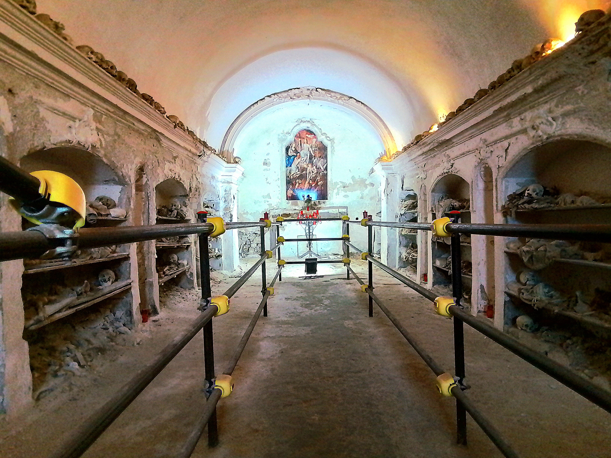

Il Percorso Esoterico

Cinque teschi sul portale stanno a guardia,
monito che ogni vanità riguarda:
al centro la tiara del Papa si posa,
di fianco i vescovi, in fila silenziosa,
poi i preti, allo stesso livello schierati —
davanti alla morte tutti pareggiati
(la livella di Totò qui prende vita:
non conta il rango quando la vita è finita).
Si entra, e i quadri accompagnano il passo
in un cammino che parte dal basso:
la fede e la carità fanno da guida,
finché un'iscrizione il cuore non sfida:
"nessuno esce da qui senza aver pagato
un pegno" — il visitatore resta segnato.
Sotto il pavimento, in silenzio, riposano
i corpi imbalsamati che ancora si posano
là dove un tempo, senza fotografie,
si onorava la morte in queste sacre vie —
per ricordare in eterno chi si amava,
quando il ricordo su pietra si scolpiva.
🔒 Contenuti Premium disponibili
Acquista l'accesso — 3,90€